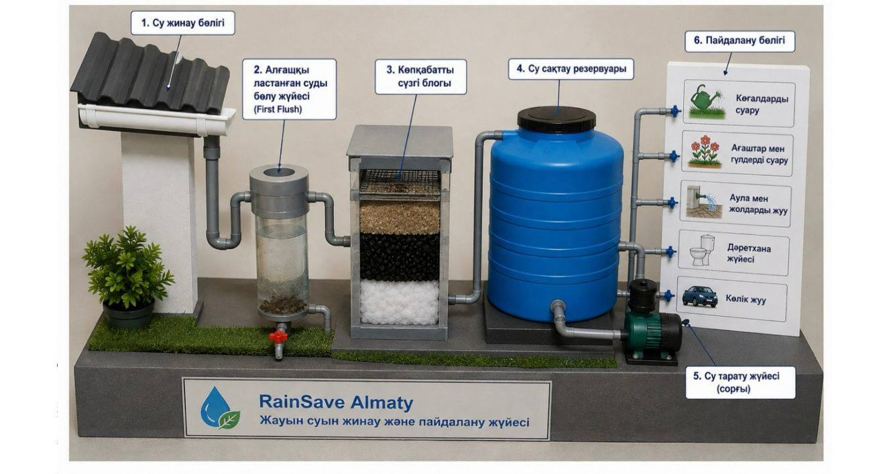

Құрметті Алматы қаласының әкімдігі!
№12 мамандандырылған гимназияның зерттеуші авторлары (Аликул А., Сманова Е.) Алматы қаласындағы жауын суының химиялық құрамын зерттеп, оның тұрмыстық-техникалық мақсаттарға жарамдылығын ғылыми негізде дәлелдеді.
Зерттеу қорытындысы: Жауын суы сүзу кезеңдерінен кейін көгалдарды суаруға, аумақтарды жууға, көлік жууға және санитарлық-техникалық жүйелерде пайдалануға толық жарамды.
Мәселе: Қазіргі уақытта жауын суының басым бөлігі нөсер кәріздері арқылы ағып кетеді, ал бұл уақытта техникалық қажеттіліктерге қымбат ауыз су жұмсалуда.
Шешім: «RainSave Almaty» инновациялық жүйесін қала мектептері мен қоғамдық ғимараттарында пилоттық жоба ретінде енгізуді ұсынамыз.
Зерттеу нәтижесінде әзірленген «RainSave Almaty» жүйесін Алматы қаласының мектептерінде, қоғамдық ғимараттарында және жеке тұрғын үйлерде пилоттық жоба ретінде сынақтан өткізуді ұсынамыз.
«RainSave Almaty» жүйесін енгізу мынадай мүмкіндіктерге жол ашады:
Сонымен қатар жауын суының сапасын тұрақты бақылау үшін зерттеу нәтижелерін интерактивті картада жинақтап, жаңартып отыратын цифрлық мониторинг жүйесін қалыптастыруды ұсынамыз.
«Біздің мақсатымыз – жауын суын жай ғана қалдық ретінде емес, дұрыс басқарылған жағдайда қаланың су ресурстарын үнемдеуге мүмкіндік беретін қосымша ресурс ретінде қарастыру. RainSave Almaty – суды үнемдеу, табиғатты қорғау және Алматының тұрақты болашағына қадам.»
Алматы қаласының 3 түрлі экологиялық аймағынан алынған су сынамаларының физикалық-химиялық көрсеткіштері.
| Көрсеткіш | І аймақ (Көше) | ІІ аймақ (Тұрғын) | ІІІ аймақ (Саябақ) |
|---|---|---|---|
| pH көрсеткіші | 6,2 | 6,5 | 6,7 |
| Электрөткізгіштік (µS/см) | 112 | 86 | 64 |
| Минералдану (TDS), мг/л | 71 | 55 | 40 |
| Жалпы қаттылық, мг/л | 28 | 22 | 18 |
| Нитраттар, мг/л | 1,9 | 1,2 | 0,8 |
| Сульфаттар, мг/л | 18 | 14 | 10 |
Жауын суын жинау, көпсатылы сүзу және қайта пайдалану кешенді жүйесі.

Практикалық бөлімінің видеосы және фотоларына өту үшін QR-кодтарды сканерлеңіз.
Практикалық бөлімінен фотоларға өту үшін сканерлеңіз.
Жобаның практикалық видео онлайн нұсқасына өту үшін сканерлеңіз.
Алматы қаласындағы зерттеу жүргізілген нүктелер және олардың су сапасы индекстері.